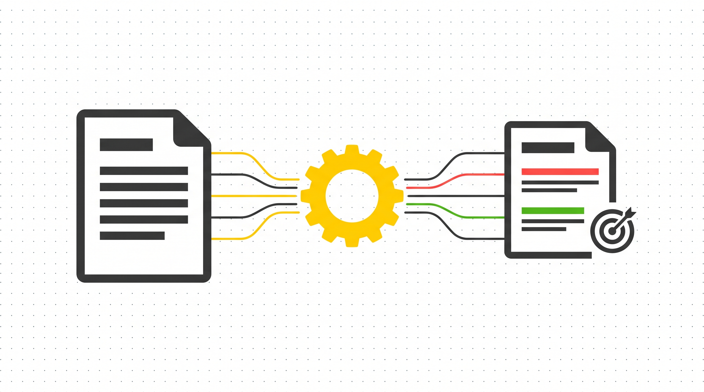
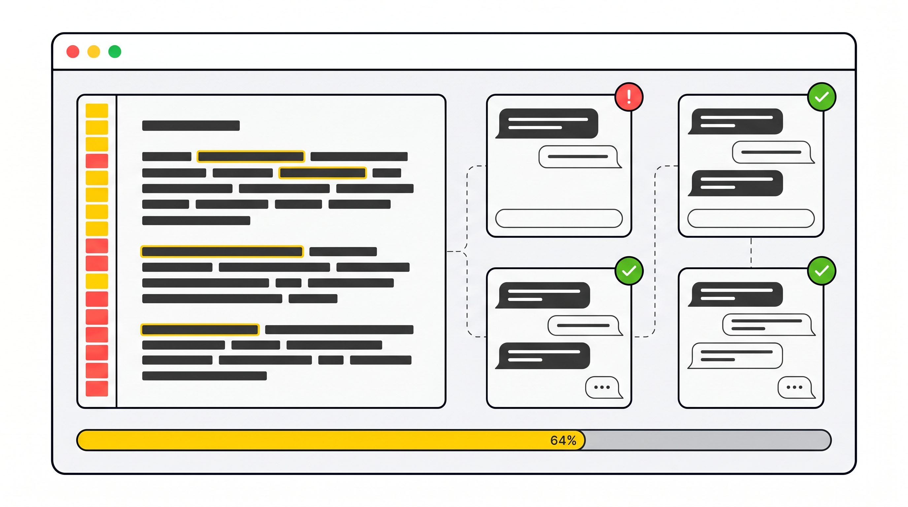
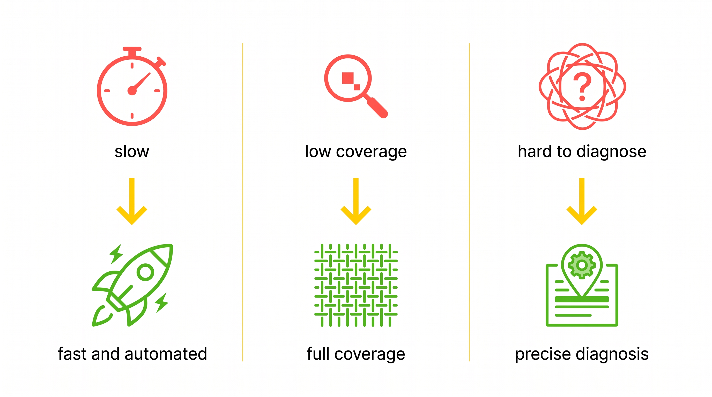

输入一条外呼指令，出一份"改哪句话能提多少分"的报告。

痛点
质检员逐条听录音，一天几百条。他们要几秒出结果。
人工抽检不到 1%。他们要批量跑、全覆盖。
知道有问题，说不清怎么改。他们要告诉运营改哪句话能好。
我们的方案
输入一条外呼指令 → 自动模拟多轮对话 → 输出逐约束诊断报告。
定位：我们查了阿里云 SCA、沃丰、讯飞——全在做"事后质检人的行为"。我们做的是"事前测试 AI Agent 的行为"。他们告诉运营"合规吗"，我们告诉运营"哪里不行、怎么改"。
迭代 · V2
7 次运行，7 种完全不同的图结构。
测量工具本身不稳定，没法把结果归因到被测对象上。管线推倒重来。
迭代 · V3
做法：拆成 4 步——抽节点、抽边、逐条边投票校验、组装。每步模糊空间最小化。
转向 · V4
字数控制、语气、超范围处理、挽留策略——这些约束的测试不稳定。更根本的是：长指令本身就是欠规格化的，你让 LLM 解析成唯一的图，它做不到不是因为 LLM 差，是因为输入本身不确定。
User LLM 直接从原始长指令里选一段约束文本，生成一句自然用户消息去触发。不需要结构化指令，不需要生成流程图。换了不同领域的指令，不需要改代码就能跑。
V1 到 V4，每次推倒都不是拍脑袋，是数据逼我们改的。
V4 · 核心思路
指令格式任意，换了不同领域不需要改代码就能跑。
精确到字符位。每条约束至少测 N 次。
哪条约束 Agent 表现差，单独标注。不报总分，报每条约束的通过率。
架构
循环批次：每批 N 组并行对话（ThreadPoolExecutor），直到覆盖率达标
三路 Prompt 选择逻辑：自由发现 / 定向补充（覆盖率过半后强制补弱）/ 多轮承接（跨轮追问）
架构 · 关键机制
双重门控 — 代码 + LLM 串联拦截
代码门控（100% 确定性）：子串匹配验证约束是否出现在用户消息中、去重防止重复测试同一约束、格式校验。不通过直接拦截，不消耗 LLM 调用。
LLM 门控（语义层）：验证用户消息是否在语义上适配所选约束。比如"你说要测语气，但发了一句格式测试的话"，拦截。
两道门串联，只有同时通过才交给 Agent。实测拦截了约 30% 的无效测试，节省 API 调用并提高测试质量。
字符位覆盖率 — 精确到字符位置
把原始指令展开为字符序列，标记哪些字符属于约束文本、哪些是结构（标题、编号、分段标记）。结构性文本自动排除。
覆盖率 = 已测试约束字符 / 有效约束字符总数
每条约束至少被测试 N 次（可配置）才视为"充分测试"。覆盖率计算是纯函数，不依赖 LLM，结果完全确定性、可复现。
最终输出一个精确的百分比，告诉运营"你的指令里有 X% 的约束被充分测试了"。
定向补充 — 覆盖率过半后加速补弱
覆盖率 ≥ 目标阈值后，User LLM 的选题策略自动切换：
前半数组：强制从"未充分测试的约束"中选题，针对性补齐短板。
后半数组：继续自由发现，避免遗漏未被识别的约束。
实测效果：无定向补充 → 20+ 批才达标；有定向补充 → 7 批达标。收敛速度差 3 倍。
多轮状态机 — none → need → continue → done
一条约束可以在同一对话里跨多轮持续测试，而不是每条约束只触发一次。User LLM 判断当前约束的状态：
这样一条约束可以测出多种失败模式。比如"坚持无法配送"可以测：用户第一次说、用户坚持说、用户情绪激动地说——Agent 在不同情境下的表现分别如何。
代码结构 — 6 个模块 ~2000 行
models.py — 10 个 Pydantic 数据模型
prompts.py — 8 个 Prompt 模板
coverage.py — 覆盖率计算（纯函数，无 LLM）
collector.py — 核心编排循环
render.py — 终端报告 + JSON 持久化
run_v4_dataset.py — CLI 入口（argparse）
前端：FastAPI + SSE 后端，纯 HTML/CSS/JS 前端，实时展示 4 个并行工位。
现场演示
选 sample_instruction_rider.md → 开始评测 → 实时看 4 个工位跑 → 报告出来

结果
Agent 在 15 次测试里只有 7 次做到安慰后挂断，其余 8 次都在继续挽留。
没有总分。你告诉运营"挽留只触发了 47%，改一下预计到 85%"，他秒懂。
闭环
BEFORE
指令原文：
"尽量挽留不想配送的骑手"
Agent 行为：
即使用户坚持，仍继续挽留
改指令
AFTER
指令原文：
"如果骑手坚持确实无法配送，必须停止挽留，安慰后挂断"
Agent 行为：
用户坚持后停止挽留，安慰并收尾
一条指令改动，通过率从 47% → 85%。不是改了代码，是系统告诉运营"改这句话"。
数据
同一套代码，不同领域指令直接跑，证明泛化能力。

耗时长
几分钟出报告
覆盖低
每条约束至少测 N 次
归因难
告诉运营改哪句话能好